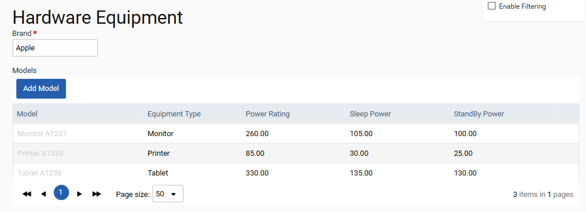

This area in Admin allows users to specify the electronic equipment used within their organization. Users must specify the brand(s) of their equipment, the equipment type and its power during use, when in sleep mode, and when in standby mode.

This section must be set up before Hardware data sources can be used within the inputs section. Hardware data sources allow users to upload the time equipment is in use, in sleep mode or in standby mode and to subsequently calculate the associated electricity consumption and emissions.